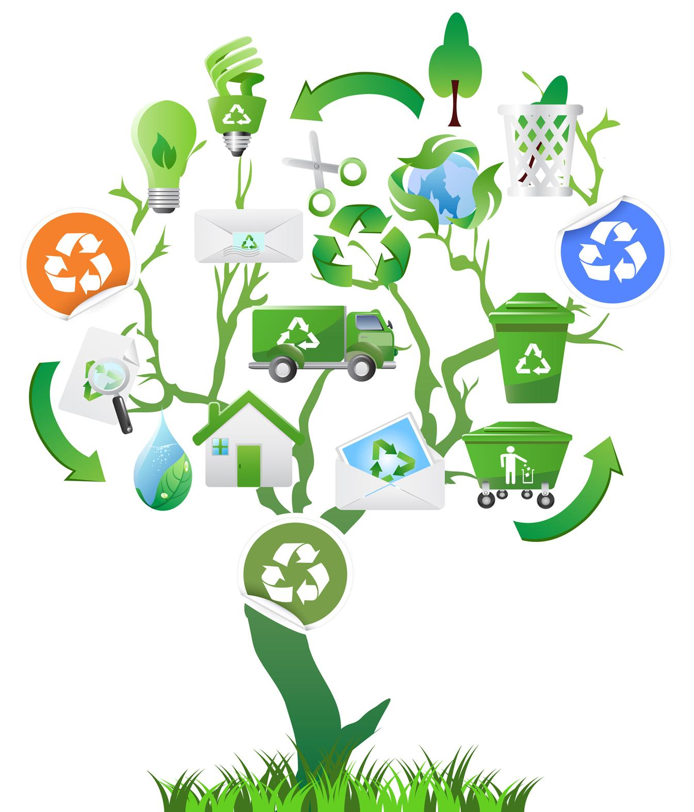

It is time for our annual recycling drive! Recycling mean taking a product or material at the end of its useful life and making it a usable new material to make another product. We have been very successful with paper and plastic products. Last year, we recycled more items than our previous three years. Let's try to do it again this year. We will have a dinner for everyone involved with the recycle drive on Saturday night. We hope to see you all there!
Recycling is something that we can all do. Children that are school age and older can help out too. The goal is to stop tossing out items that we can use again and again. It costs far less to recycle materials than it does to create new ones. As the technology offered improves those methods it becomes more cost effective and less time consuming for recycling efforts to be successful too.
The City of Decatur's recycling program underwent big changes in January 2011. The new, larger 65-gallon carts will be picked up every other week. The following chart details whether your neighborhood is designated as a "red" route or a "blue" route. The red routes are picked up on even-numbered weeks. The blue routes are picked up on odd-numbered weeks.
For information regarding this website, recycling products, or sponsoring a recycle drive, please e-mail: Donna Jo McCauley at donna_maccauley@isp.com